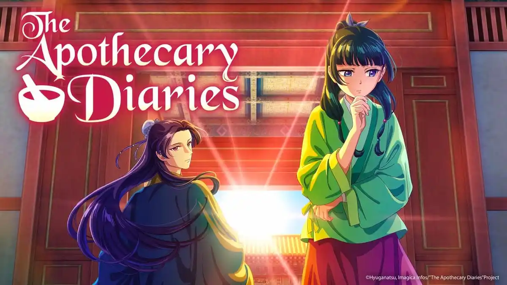

Diário de uma Apotecária
Autor: Natsu Hyuuga
O anime acompanha Maomao, uma jovem farmacêutica que é levada ao palácio imperial onde usa seus conhecimentos para resolver mistérios de forma brilhante.
Adaptado das light novels iniciadas em 2011, o anime estreou em 2023 e conquistou o público com seu misto de intriga, ciência e carisma.
Previsão de lançamento da 2ª temporada: Outono de 2025
